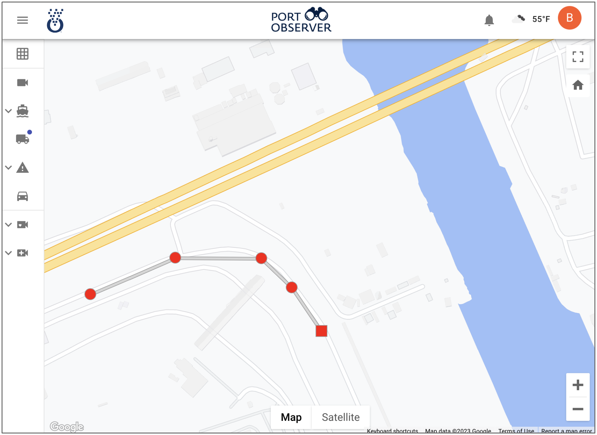
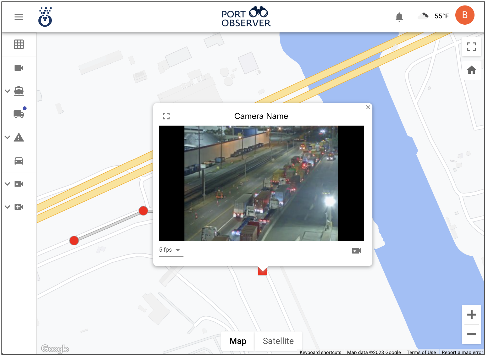
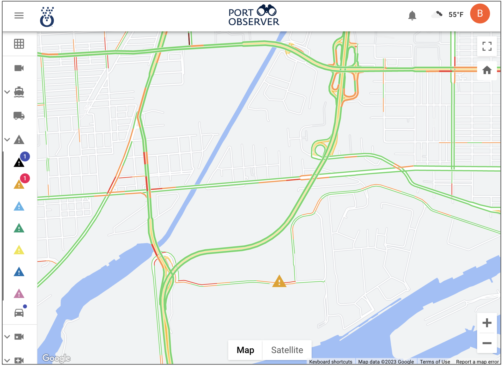
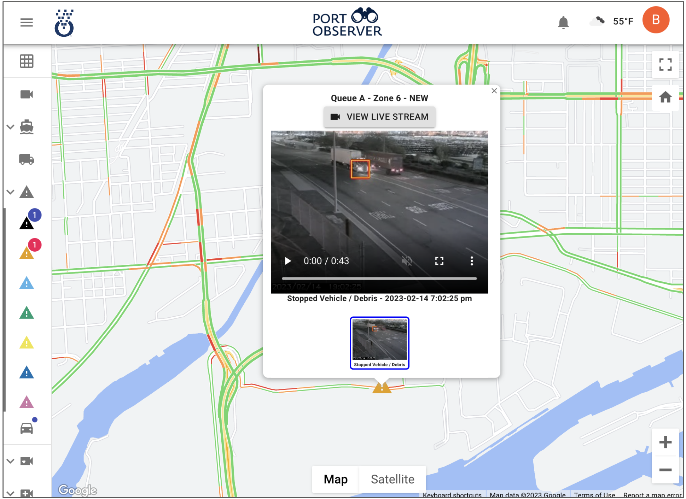

TrafficVision™TMC is at the frontier of Queue & incident detection providing the foudational traffic analytics configured to work in concert with Port Observer to track queuing, traffic alerts, AIS ship data, along predetermined roadways across multiple cameras.
Truck Queuing
Observer provides a map over the covered area and provides queuing status along the desired path.
Any segment can be selected to provide a real time view of the current queuing.

Providing realtime visual verification of landside queuing.
Port Traffic & Incidents
Observer can provide real-time traffic alerts on the map view for all of the alerts provided by TrafficVision™ TMC.

Providing realtime visual verification of anomalies and alerts providng so decisions can be made with all the information at hand including incident images and clips.

With TrafficVision™ is at the heart, all the historical data is also captured for future study and reference of alerts, queuing, and traffic data.
AIS and Other Data
The map view also has the capability to show AIS vessel data for the covered area for ports. Daily weather information is also available.

Observer provides a situational view of both landside and waterside traffic.

Easily accessible through an easy-to-use interface.
Expanding the forefront of AI for safety!